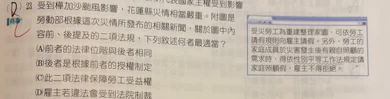

分享原卷｜第23題
完整原題
作答所需文章／材料
【原卷新聞內容】 受災勞工為重建整理家園，可依勞工請假規則向雇主請假。另外，勞工的家庭成員於災害發生後有親自照顧的需求時，得依性別平等工作法規定請家庭照顧假，雇主不得拒絕。受到樺加沙颱風影響，花蓮縣災情相當嚴重。附圖是勞動部根據這次災情所發布的相關新聞，關於圖中內容前、後提及的二項法律，下列敘述何者最適當？
(A) 前者的法律位階與後者相同
(B) 後者是根據前者的授權制定
(C) 此二項法律保障勞工受益權
(D) 雇主若違法會受到法院制裁
先想一想，再查看答案、解說與原圖
原卷作答：D（原卷紅筆改C）
本題預期：(C) 此二項法律保障勞工受益權。
逐項解析
| 選項與原句 | 判讀 | 句意與判斷理由 |
|---|---|---|
| (A) 前者的法律位階與後者相同 | 不選 | 規則屬命令、性別平等工作法屬法律，位階不同。 |
| (B) 後者是根據前者的授權制定 | 不選 | 規則不能成為制定上位法律的授權來源。 |
| (C) 此二項法律保障勞工受益權 | 應選 | 二者均保障勞工工作與相關權益，依本題教材分類屬受益權保障。 |
| (D) 雇主若違法會受到法院制裁 | 不選 | 違法後可能由行政機關裁處，不是概括地一律由法院制裁；民事救濟仍可由法院處理。 |
詳細說明與解題步驟
先照原新聞辨認前、後兩項：前者為《勞工請假規則》，後者為《性別平等工作法》。前者是依法律授權訂定的命令，後者是法律，位階不同；也不是後者依前者授權而制定，因此A、B不適當。
兩項規範都在保障勞工的工作及相關生活照護權益，依本題國中公民將工作權列入經濟上受益權的分類，C最適當。選項中的「法律」在這裡泛指法規，不能只因前者的正式位階是命令，就否定它在保護勞工權益。
雇主違法不等於一定先由法院裁罰；例如拒絕法定家庭照顧假的行政責任，可由主管機關依法裁處。勞雇損害賠償等爭議仍可能進入法院，所以也不把D的不適當反過來說成法院永遠不處理勞動爭議。
原AI將四個選項全判錯，並把請假保障排除於受益權之外，未按題幹「何者最適當」及教材分類判斷；本題訂正為C，原題與四選項照留。
核對註記：依完整原卷文章／表格與四選項核對；依本題國中教材作權利分類，法律名稱與法規位階另查官方條文；保留原文時事數字與時點，不代換成最新新聞。
原圖（僅本題）
